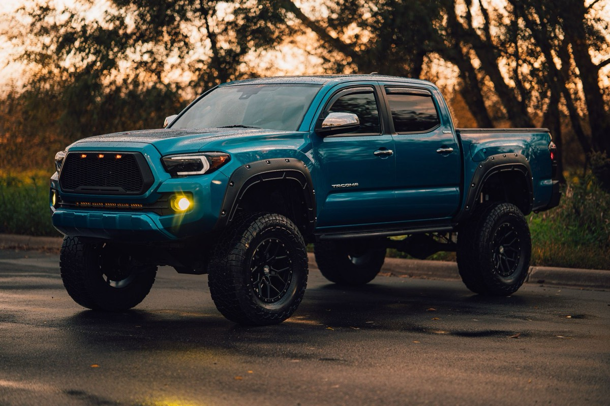
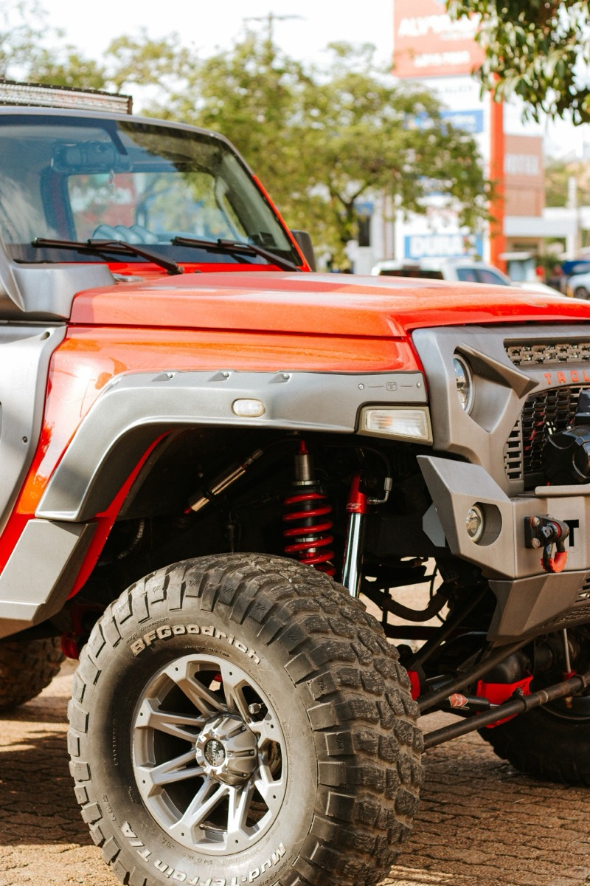
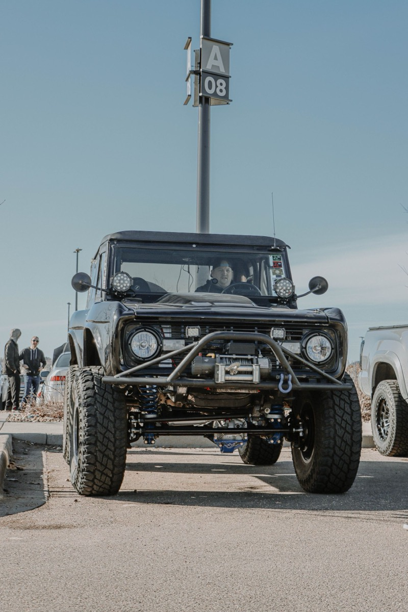
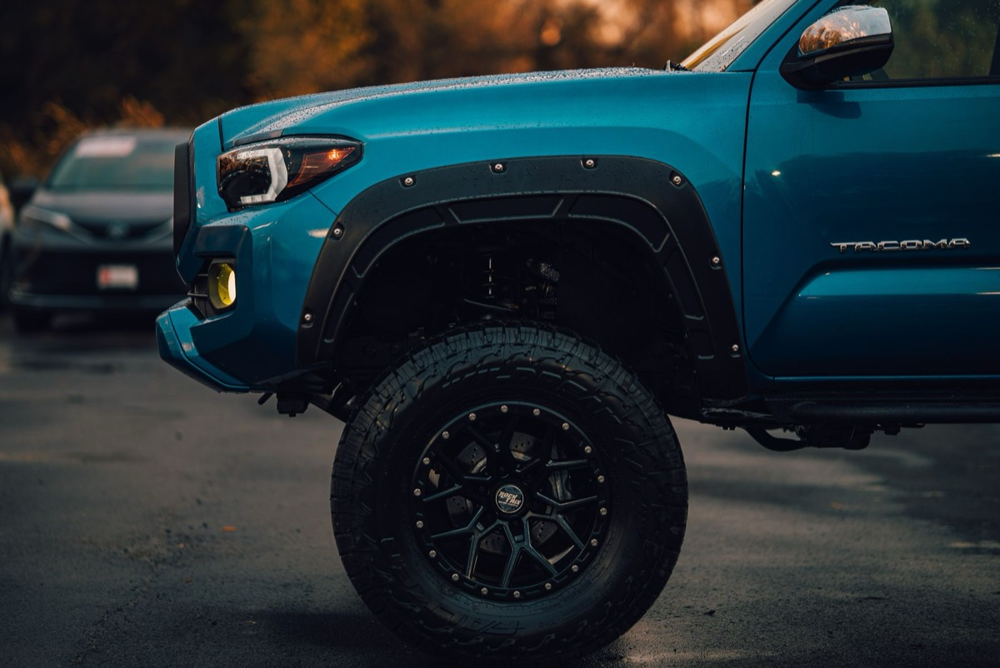
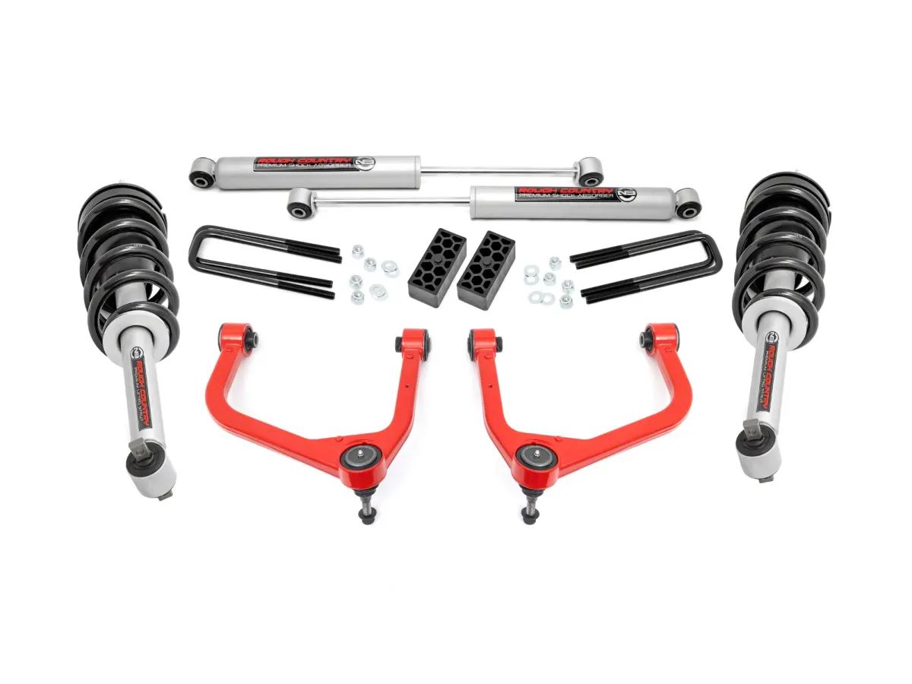
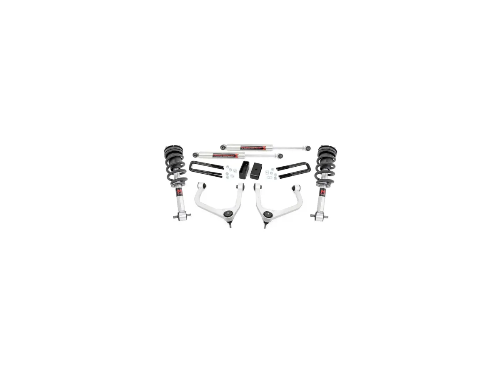

Two 3.5-Inch Lift Kits, $230 Apart: What the M1 Shocks Actually Buy
Rough Country sells two 3.5-inch lift kits for the 2019–2024 Silverado 1500. Same lift height, same forged aluminum upper control arms, same 34-inch tire ceiling, same estimated install time. One costs $939.95. The other costs $1,169.95. The $230 is almost entirely in the dampers. Whether it is wort

Rough Country sells two 3.5-inch lift kits for the 2019–2024 Silverado 1500. Same lift height, same forged aluminum upper control arms, same 34-inch tire ceiling, same estimated install time. One costs $939.95. The other costs $1,169.95.
The $230 is almost entirely in the dampers. Whether it is worth paying depends on one question: what your truck does when it is not on pavement. All figures below were read off both listings on 13 November 2026.
What both kits have in common
Strip away the shock choice and these are the same product.
Both lift the front 3.5 inches and the rear 2.5 inches — not 3.5 all round, which is worth stating because the names suggest otherwise. Both level the truck rather than just raising it, both include forged aluminum upper control arms with POM ball joints pre-installed, and both list a 34-inch maximum tire size. Both carry Rough Country’s limited lifetime warranty.
They also share fitment exclusions that matter more than the price gap:
- Not for Trail Boss or ZR2. Those trucks ship with a factory lift and different dampers. Rough Country excludes both by name.
- Not for Adaptive Ride Control, and no 2019 Classic (the 2018-body truck).
- Multi-leaf rear springs required. Coil-spring rear trucks are out.
The M1 listing adds one exclusion the N3 listing does not state: no diesel models. On a 3.0L Duramax, that alone decides which kit you can buy.

The real differences
N3, $939.95. Rough Country’s baseline nitrogen-charged damper. The listing calls the kit “fully configurable with all shock and strut options,” which reflects how these are built: same brackets and arms, different dampers bolted on.
M1, $1,169.95. A monotube shock, and the listing is more specific: M1 struts, M1 monotube rear shocks, with N3 and Vertex reservoir listed as the other options in the same family. It also states the tire ceiling in metric — up to 295/55R20 — where the N3 kit says only “34 inch.” Same ceiling, easier to shop. And it says outright that a strut compressor is required, which the N3 listing does not mention.

What 481 reviews actually tell you
Both listings show 481 reviews at 4.7 stars. That is not two sets of 481.
Rough Country’s Silverado lift kits share a review pool on this retailer — the same 481 appears on other 3.5-inch kits with different part numbers. So it is a brand-family rating, not a per-kit one. It says Rough Country’s Silverado lift kits as a group are well regarded. It cannot say whether the M1 damper is worth $230, because the reviews are not split by shock option.
Treat it as a brand signal and nothing finer.

Which one to buy
Mostly a street truck: take the N3. You are paying for height, control arms and corrected geometry, and the N3 is adequate for that. The arms and the tire ceiling are identical to the more expensive kit.
Off-road or towing: the M1 monotube is the defensible purchase. A monotube holds its damping better under sustained work — repeated compression on washboard, or a loaded trailer — because it manages heat differently from a twin-tube. That mechanism is what the $230 buys, not a cosmetic upgrade.
Diesel, Adaptive Ride Control, or Trail Boss: the choice is already made. The M1 excludes diesel; the N3 is silent, so confirm before ordering. Neither kit fits Adaptive Ride Control or a Trail Boss, and no shock upgrade changes that.
The cost nobody puts in the table
The kit is not the job. Both listings quote five to six hours, and the M1 adds a strut compressor. Then add an alignment, because you have changed ride height and front geometry with it. That is not optional on a lifted independent front suspension and it is in neither price.
CarModReview may earn a commission from purchases made through links on this page, at no extra cost to you.

Rough Country 3.50-Inch Forged UCA Lift Kit with N3 Struts and Premium N3 Shocks, Red (19–24 Silverado 1500)
3.5 inches front, 2.5 inches rear. Forged aluminum upper control arms with POM ball joints, pre-installed. Nitrogen-charged N3 struts and rear shocks. 34-inch maximum tire. Estimated five to six hours to install. Excludes Trail Boss, ZR2, Adaptive Ride Control and 2019 Classic models; requires multi-leaf rear springs.
The 481 reviews at 4.7 are shared across Rough Country's Silverado lift kits on this listing, not unique to this part number — treat it as a brand rating.
- Price
- $939.95
- Fitment
- 2019–2024 4.3L, 5.3L, 6.2L with multi-leaf rear springs
- Lift
- 3.50 in front, 2.50 in rear
- Dampers
- N3 struts and N3 rear shocks
- Max tire
- 34 in
- Stock
- In stock
See the Rough Country N3 kit → $939.95, checked 13 Nov 2026

Rough Country 3.50-Inch Suspension Lift Kit with M1 Struts and Rear M1 Monotube Shocks (19–24 Silverado 1500)
Same 3.5-inch front and 2.5-inch rear lift, same forged upper control arms, same 34-inch ceiling. The difference is the damper: M1 monotube struts and M1 monotube rear shocks, which hold damping better under sustained work than a twin-tube. Listing states tires up to 295/55R20 and notes a strut compressor is required. Excludes Trail Boss, ZR2, Adaptive Ride Control, 2019 Classic and diesel models.
The diesel exclusion is the one to check first — the N3 listing does not state one either way, and this one rules it out.
- Price
- $1,169.95
- Fitment
- 2019–2024 with multi-leaf rear springs, excluding diesel
- Lift
- 3.50 in front, 2.50 in rear
- Dampers
- M1 struts and M1 monotube rear shocks
- Max tire
- 295/55R20 or 34 in
- Stock
- In stock
See the Rough Country M1 kit → $1,169.95, checked 13 Nov 2026
Frequently asked questions
Is a 3.5-inch lift kit the same on the front and rear?
Not on these kits. Both lift the front 3.5 inches and the rear 2.5 inches, which levels the truck by raising the front more than the rear. A kit that lifted 3.5 inches at both ends would leave the factory rake in place.
Will a 3.5-inch kit fit a Trail Boss or ZR2?
No. Both listings exclude those models by name. They ship with a factory lift and different dampers, so the kit’s bracketry and geometry do not apply.
Can I fit 35-inch tires?
Both listings state a 34-inch maximum. Do not assume a 35 clears because the lift looks tall enough — the limit is what the manufacturer publishes, and steering clearance at full lock is usually where it fails first.
Do I need an alignment after installing one?
Yes. You have changed ride height on an independent front suspension, which changes camber and toe. The listings do not include an alignment and neither price covers it.
Which kit if I tow regularly?
The M1 monotube. A monotube damper manages heat better under repeated load, which is the condition a loaded trailer creates. It is the specific reason the kit costs $230 more, rather than a styling difference.
Topics
- Suspension
- Rough Country
- Silverado 1500
- Duramax
- 5.3L
- 6.2L
- 3.0L
- 4.3L